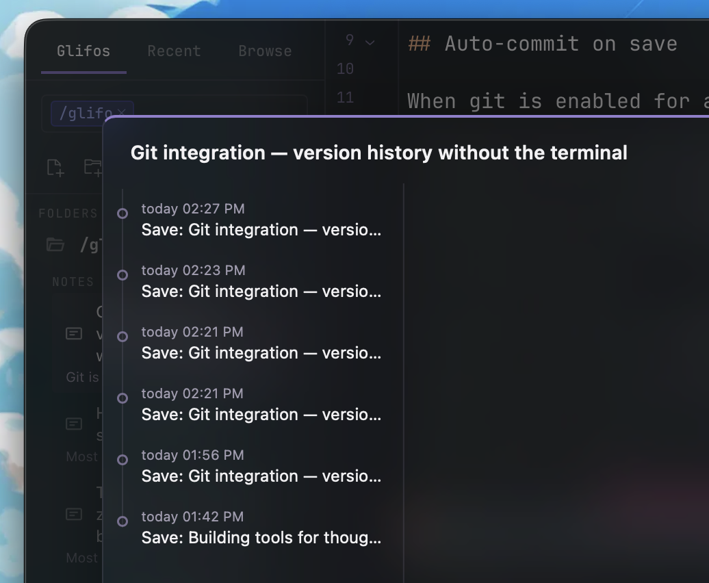
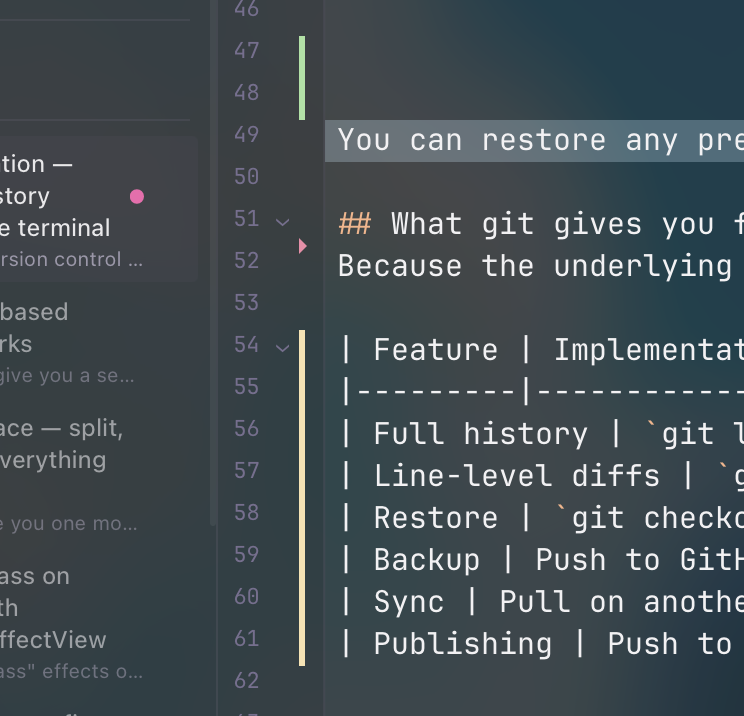
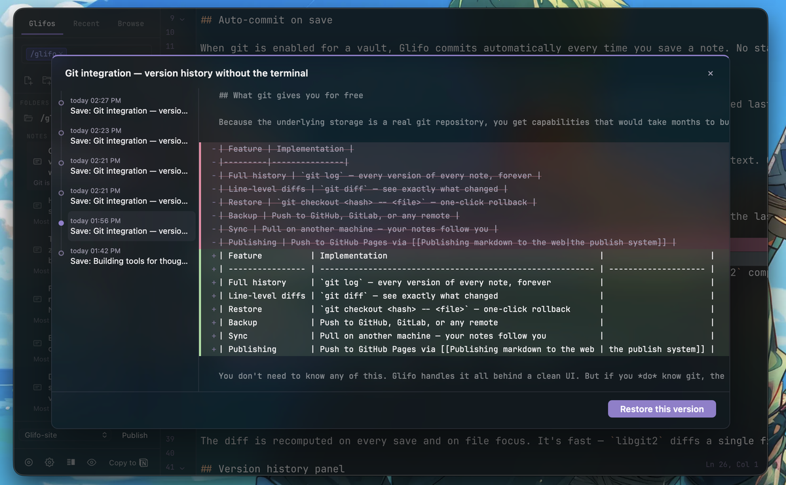

Git integration — version history without the terminal
Git is the best version control system ever built. It's also one of the worst user interfaces ever built. Glifo bridges the gap: every save creates a commit, every change is tracked, and you never have to open a terminal.
Auto-commit on save
When git is enabled for a vault, Glifo commits automatically every time you save a note. No staging, no commit messages to write, no branches to manage. The commit message is generated from the filename and timestamp.

This means your entire writing history is preserved by default. That paragraph you deleted last Tuesday? It's in the git log. The version before you restructured the whole post? Also there.
The diff gutter
The editor shows git change markers in the gutter — the thin column to the left of your text. Green bars indicate new lines, blue bars indicate modified lines, and red triangles mark deletions.

These markers update in real time as you type. They compare your current buffer against the last commit, so you always know what you've changed since the last save. It's the same visual language as VS Code and every other modern editor — but built into a writing tool.
How it works
The gutter reads from a diff between HEAD and the working tree. On the Rust side, git2 computes the diff; on the frontend, CodeMirror maps the hunks to line decorations:
// Map git diff hunks to CodeMirror gutter markers
for (const hunk of hunks) {
for (let i = hunk.newStart; i < hunk.newStart + hunk.newLines; i++) {
const type = hunk.oldLines === 0 ? 'added' : 'modified';
markers.push({ line: i, type });
}
}
The diff is recomputed on every save and on file focus. It's fast — libgit2 diffs a single file in microseconds.
Version history panel
Click the history icon and a timeline appears. Each entry shows the commit hash, timestamp, and a preview of what changed. Click any entry to see the full diff — additions highlighted in green, deletions in red.

You can restore any previous version with one click. Glifo creates a new commit with the restored content, so the restore itself is part of the history. No data is ever lost.
What git gives you for free
Because the underlying storage is a real git repository, you get capabilities that would take months to build from scratch:
| Feature | Implementation |
|---|---|
| Full history | git log — every version of every note, forever |
| Line-level diffs | git diff — see exactly what changed |
| Restore | git checkout <hash> -- <file> — one-click rollback |
| Backup | Push to GitHub, GitLab, or any remote |
| Sync | Pull on another machine — your notes follow you |
| Publishing | Push to GitHub Pages via the publish system |
You don't need to know any of this. Glifo handles it all behind a clean UI. But if you do know git, the vault is a standard repo — cd into it and run whatever you want.
Automatic maintenance
Auto-commit means a lot of commits. A vault with daily use generates hundreds of commits per month. To keep the .git folder from growing unbounded, Glifo runs git gc --auto in the background — the same garbage collection that git itself uses.
Maintenance triggers automatically at two points: when you open a vault (if 24 hours have passed since the last run), and after every 200 commits during a session. Git's --auto flag means it only does real work when thresholds are met (too many loose objects or pack files), so most of the time it's a no-op.
The result: your full history is preserved — every version, every paragraph — but stored efficiently. Thousands of loose object files get compressed into compact pack files with delta compression, typically reducing .git size by 10–50x for text-heavy vaults.
If git isn't installed on your machine, maintenance is silently skipped. Nothing breaks — the vault just won't be compacted automatically.
Version control for writing shouldn't require learning version control. Save your note, and the history is there. Change your mind, and the old version is one click away. That's it.